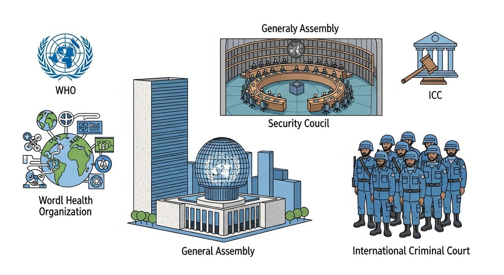

9.8 Institutions Developing in a Globalized World
- LO-A: The United Nations was founded to prevent another world war: After WWII's devastation, world leaders created the United Nations (1945) with the stated goal of maintaining international peace and facilitating cooperation. The catastrophe of two world wars in 30 years convinced leaders that some form of international governance was necessary. The UN's structure reflected Cold War power realities: The five permanent members of the Security Council (US, USSR, UK, France, China) each held veto power, a compromise ensuring great-power participation while limiting the UN's ability to act when those powers disagreed. The veto effectively paralyzed the Security Council during the Cold War. The UN expanded far beyond peacekeeping: The UN system grew to include specialized agencies addressing health (WHO), children (UNICEF), refugees (UNHCR), food (FAO), culture (UNESCO), and labor (ILO). These agencies addressed global problems that no single nation could solve, making the UN an essential infrastructure of the modern world even when its political bodies were paralyzed. Global institutions reflected but also challenged the state system: International organizations constrained national sovereignty, nations that joined agreed to follow international rules. They also reflected the existing distribution of power (wealthy nations had more influence). But they created forums where all nations, however small, had a voice, representing a genuinely new form of global governance.
Try each question before revealing the answer.
1. Why was the United Nations founded in 1945, and how was it different from the League of Nations?
2. How did the Security Council veto affect the UN's ability to maintain peace during the Cold War?
3. How did UN specialized agencies like WHO and UNICEF address global problems that individual nations couldn't solve alone?
- Explain how and why globalization changed international interactions among states, including the formation of new international organizations like the United Nations with the stated goal of maintaining world peace and facilitating international cooperation
Tap a term for its definition.
-
Definition: International organization founded in 1945 with 193 member states, with the stated goal of maintaining international peace and facilitating cooperation. Significance: The CED's central example for KC-6.3.II.A; the primary institution of global governance in the post-WWII era, with specialized agencies addressing health, children, refugees, culture, and more.
-
Definition: The UN body with primary responsibility for international peace and security, with five permanent members (US, UK, France, Russia/USSR, China) each holding veto power. Significance: The veto made the Security Council effective when great powers agreed, paralyzed when they disagreed, severely limiting its effectiveness during the Cold War.
-
Definition: The UN body where all member states have equal representation and voting rights (one state, one vote), though resolutions are non-binding. Significance: Gave small and developing nations a formal global voice; passed the Universal Declaration of Human Rights (1948) and numerous resolutions on decolonization, development, and disarmament.
-
Definition: UN specialized agency coordinating international public health, setting standards, monitoring disease, coordinating vaccination campaigns and epidemic responses. Significance: Led the global campaign that eradicated smallpox (1980); coordinates responses to pandemics including COVID-19.
-
Definition: UN Children's Fund, provides humanitarian aid and development assistance to children worldwide. Significance: Delivers food, vaccines, clean water, and education in conflict zones and humanitarian crises worldwide, operating where individual governments cannot.
-
Definition: A state's supreme authority within its own territory and independence from external control. Significance: International organizations like the UN both respect sovereignty (the UN Charter prohibits interference in members' internal affairs) and challenge it (the UN can authorize force; international law constrains state behavior).
🌍 A New World Order: The United Nations (KC-6.3.II.A)
After the catastrophe of two world wars in 30 years, which together killed an estimated 100 million people, world leaders were determined to create an international institution that could prevent another such disaster. The AP CED identifies this development precisely: "New international organizations, including the United Nations, formed with the stated goal of maintaining world peace and facilitating international cooperation."
The United Nations was formally established on October 24, 1945, when its charter was ratified by 51 founding member nations. The word "United Nations" had been used by Franklin Roosevelt to describe the Allied coalition fighting the Axis powers; now it described a permanent international organization. The UN's founding represented both a continuation of earlier attempts at international governance, notably the League of Nations (1919), and a significant departure from them. Most crucially, the United States joined. The League had been fatally undermined by the US Senate's refusal to ratify it, leaving the world's most powerful nation outside the organization designed to keep the peace. The UN's founders were determined not to repeat this mistake, designing the Security Council's permanent membership and veto system specifically to ensure great-power buy-in.

Image credit not specified.
AI-generated illustration (Google Gemini, 2025), commercially licensed.
🏛️ Structure: How the UN Works
The UN's architecture balanced universality with great-power realism. It had two major deliberative bodies:
The General Assembly includes all member states (193 as of the 21st century), with each nation having one vote. The General Assembly debates and passes resolutions on any matter within the UN's scope, but its resolutions are non-binding. They carry moral authority without legal force. The General Assembly gave small and developing nations a formal global voice; decolonization-era nations used it extensively to press for independence, economic equity, and disarmament. It passed the Universal Declaration of Human Rights in 1948 and created the UN Environment Programme and numerous other bodies.
The Security Council has primary responsibility for international peace and security and can take binding decisions, including authorizing the use of military force. It has 15 members: 10 rotating members elected by the General Assembly for two-year terms, and 5 permanent members (the P5): the United States, the United Kingdom, France, the Soviet Union (now Russia), and China. Each permanent member holds the right to veto any substantive resolution, meaning a single P5 member can block any Security Council action, regardless of how many other members support it. This veto was a deliberate compromise: it ensured that the great powers would join the UN (unlike the League of Nations) but at the cost of making the Security Council ineffective whenever great powers disagreed.
❄️ The UN During the Cold War: Accomplishments and Limitations
The Cold War immediately tested the UN's capacity. The US-Soviet rivalry meant that the Security Council was frequently paralyzed by vetoes: whenever one superpower wanted action, the other blocked it. The Soviet Union vetoed 100 Security Council resolutions in the UN's first decade alone. Major Cold War conflicts, the Vietnam War, the Soviet invasion of Afghanistan, US interventions in Latin America, were not resolved by the Security Council.
There were exceptions. The Korean War (1950–53) was authorized under the UN flag, but only because the USSR was boycotting the Security Council in protest over China's representation at the time. UN peacekeeping operations, "Blue Helmets", were deployed to conflict zones including the Middle East, Cyprus, Congo, and eventually Bosnia and Rwanda, though their effectiveness was limited by the rules under which they operated (they could observe and monitor, but not actively fight unless fired upon).
The UN was more effective through its specialized agencies. The World Health Organization (WHO) coordinated the global vaccination campaign that eradicated smallpox by 1980, perhaps the greatest public health achievement in history, and coordinated responses to polio, malaria, and later HIV/AIDS and COVID-19. UNICEF delivered humanitarian assistance to children in conflict zones worldwide. The UN High Commissioner for Refugees (UNHCR) protected tens of millions of refugees. UNESCO promoted education, science, and cultural preservation. The Food and Agriculture Organization (FAO) addressed food security globally. These agencies operated relatively independently of great-power politics, making them more consistently effective than the Security Council.
🌐 The Post-Cold War UN: Expanded Role, New Challenges
The end of the Cold War in 1991 briefly appeared to unlock the Security Council's potential. With US-Russian cooperation suddenly possible, the Security Council authorized the Gulf War (1990–91) against Iraq, UN peacekeeping expanded dramatically in the early 1990s, and Secretary-General Boutros-Ghali announced an ambitious "Agenda for Peace." But new challenges quickly revealed continuing limitations.
The Rwandan genocide of 1994, in which 800,000 Tutsi and moderate Hutu were killed in 100 days while UN peacekeepers stood by, instructed not to intervene, revealed the devastating gap between the UN's stated goals and its actual capacity and political will. The Security Council refused to authorize effective intervention despite clear evidence of genocide. The Srebrenica massacre (1995), in which UN-protected Bosnian Muslim men and boys were slaughtered by Serbian forces, further damaged UN credibility. These failures produced the doctrine of the "Responsibility to Protect" (R2P), the principle that the international community had a responsibility to intervene when a state committed atrocities against its own people, but implementation remained contested.
The 21st century brought new challenges: terrorism (September 11, 2001), the US invasion of Iraq (2003) without Security Council authorization, climate change (requiring international coordination the Security Council couldn't provide), and great-power rivalry between the US, China, and Russia that once again paralyzed the Security Council on major conflicts. The UN remained an essential forum and its specialized agencies continued vital work, but its founding promise of maintained world peace proved aspirational rather than achieved.
🔗 The UN in Context: Part of a Broader Institutional Order
The United Nations was the central institution of a broader post-WWII international order that included multiple interconnected organizations. The Bretton Woods institutions, the IMF and World Bank (both discussed in 9.7), were created at the same 1944 conference that designed the postwar economic order. The General Agreement on Tariffs and Trade (GATT), eventually replaced by the WTO (1995), governed global trade. The NATO alliance (1949) provided collective security for Western nations. The European integration project, from the European Coal and Steel Community (1951) to the European Union (1993), created the most deeply integrated regional institutional framework in history. Together, these institutions represented an unprecedented attempt to govern key aspects of international life through rules-based multilateral frameworks rather than purely through great-power competition.
These institutions had critics from left and right: from those who thought they served wealthy-nation interests (the anti-IMF activists of 9.7), those who thought they infringed on national sovereignty, and those who thought they were too weak to address genuine global challenges. But their existence and persistence, despite these critiques, represented a genuine transformation in how international relations operated compared to the pre-WWII world. The question of whether international institutions could become strong enough to address the major challenges of the 21st century, climate change, nuclear proliferation, pandemics, inequality, remained one of the defining questions of the era.
These videos will help you review Institutions Developing in a Globalized World and solidify key concepts before your exam.
- maintain world peace and facilitate international cooperation.
- promote free-market economic policies among member nations.
- govern the decolonization process after World War II.
- enforce human rights standards in member nations.
- ensured that the wealthiest nations contributed most to UN peacekeeping operations.
- gave each permanent member the power to block any substantive Security Council resolution, enabling great-power participation but limiting effectiveness when powers disagreed.
- prevented developing nations from participating in Security Council decisions.
- required unanimous agreement among all 15 Security Council members before any resolution could pass.
- resolving military conflicts between the US and Soviet Union through Security Council action.
- establishing a world government with binding authority over member nations.
- eliminating nuclear weapons through disarmament agreements.
- providing technical international cooperation through specialized agencies like WHO and UNICEF.
- The UN had a stronger General Assembly with binding vote authority over member nations.
- The League of Nations included all five major powers while the UN excluded the Soviet Union.
- Unlike the League, the UN included the United States as a member and had a Security Council with enforcement powers.
- The UN focused exclusively on economic cooperation, while the League addressed military conflicts.
- the inability of international organizations to address any form of political violence.
- the gap between the UN's stated goal of maintaining peace and the limitations of its actual enforcement capacity when great powers lacked political will to intervene.
- the success of the Security Council veto in preventing unjust military interventions.
- the preference of UN member states for bilateral rather than multilateral diplomacy.